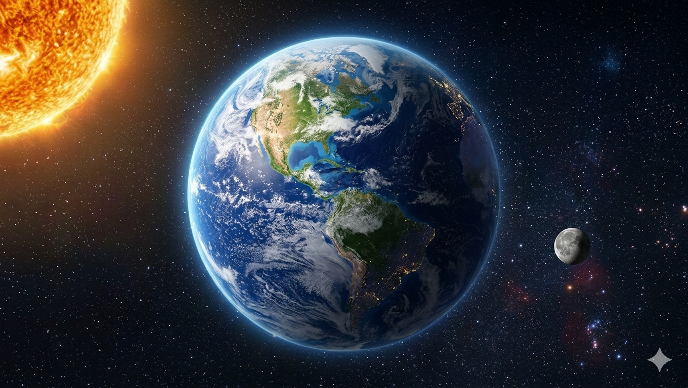
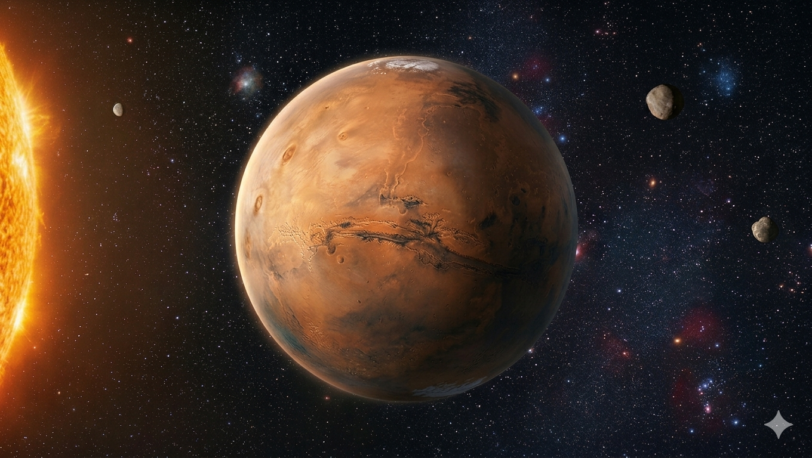
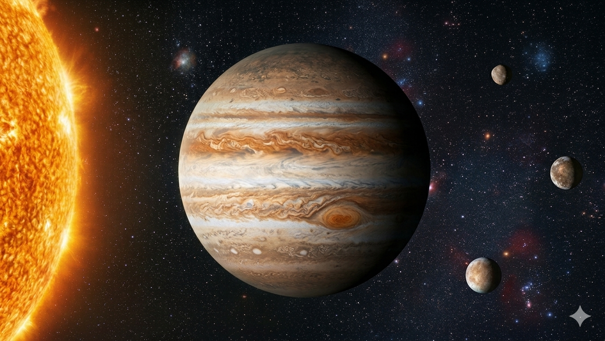
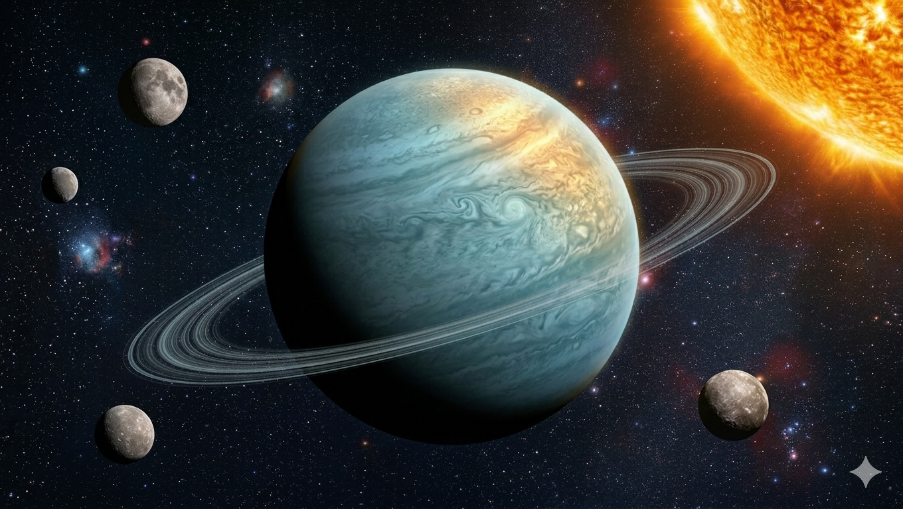
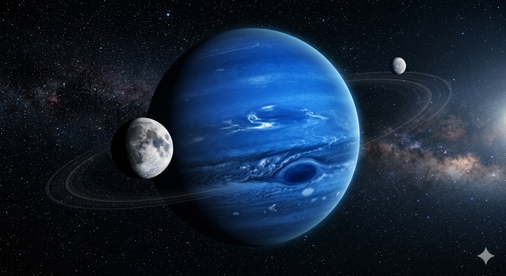

ЗЕМЛЯ (Earth)
Це єдина відома планета, на якій існує життя, зі складною атмосферою та океанами рідкої води. Третя від Сонця.
Дізнатися більше
МАРС (Mars)
Відома як "Червона планета" через оксид заліза на поверхні. Має найбільший вулкан та два супутники.
Дізнатися більше
ЮПІТЕР (Jupiter)
Найбільша планета Сонячної системи, газовий гігант з Великою Червоною Плямою та понад 90 супутниками.
Дізнатися більше
УРАН (Uranus)
Крижаний газовий гігант, унікальний тим, що обертається "на боці". Має слабкі кільця та багато супутников.
Дізнатися більшеМЕРКУРІЙ (Mercury)
Найближча до Сонця та найменша планета системи. Через відсутність атмосфери температура тут коливається від пекельної спеки до космічного холоду.
Дізнатися більшеВЕНЕРА (Venus)
Друга планета від Сонця, вкрита густими хмарами сірчаної кислоти. Через потужний парниковий ефект є найгарячішою планетою системи.
Дізнатися більшеСАТУРН (Saturn)
Газовий гігант, знаменитий своєю масштабною системою кілець із льоду та пилу. Має величезну кількість супутників, включаючи Титан.
Дізнатися більше
НЕПТУН (Neptune)
Найвіддаленіший крижаний гігант. Відомий глибоким синім кольором атмосфери та найсильнішими вітрами у Сонячній системі.
Дізнатися більше